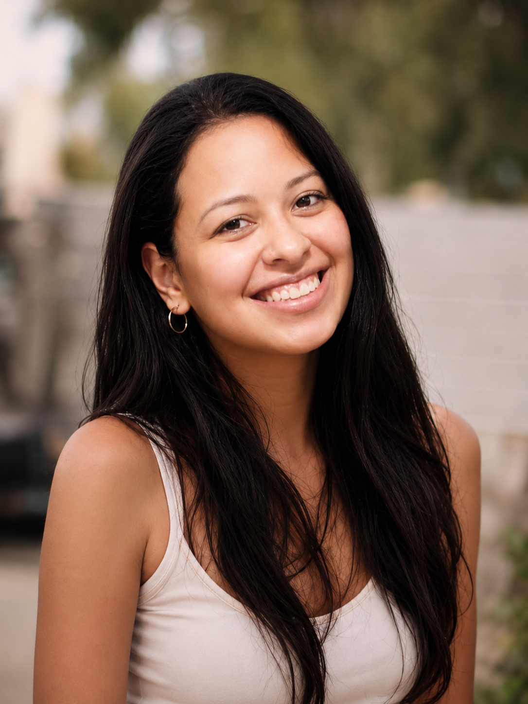

Yerina Bello

Her cheerful spirit made those Orlando years brighter.
Some of my warmest memories from Orlando include Yerina and her family. Yerina is Ecuadorian, and she brought a cheerful, warm energy into every space she was in.
We met while working at the same restaurant in Orlando. Yerina was hardworking, easy to talk to, and always cheerful. We started as friends, but over time, our connection grew closer and more personal than an ordinary friendship, even though we never put a formal label on it.
I found Yerina attractive, but what stood out most was her energy and the way she carried herself. She always looked great when our group got ready to go out and party. We would meet at my apartment with her brother Carlos, her cousins, and other friends, talk for hours, laugh, listen to music, and then head out together. We were young, enjoyed a good time, and probably drank more than we should have at times, but those nights were full of life and good memories.
Some of my best memories from those summers were the times we went paintballing and the trips we took to Cocoa Beach. They were simple moments, but they captured that time perfectly, with good people, warm weather, laughter, and the freedom of being young in Orlando.
Her family was always warm and respectful with me, and I appreciated the bond I developed with them. There was a time when I wondered whether my connection with Yerina might become something more. But the chemistry never felt strong enough to force it into becoming a relationship simply because we were close. Looking back, I think it was better that we allowed things to remain natural.
After I moved to South Carolina, we lost touch for a while. Yerina continued building her own life and becoming more independent. In recent years, we have reconnected. We do not talk often, but it has been meaningful to restore part of that connection.
Today, Yerina lives in Tennessee, and I hope we have the opportunity to see each other again, either when she visits North Carolina or when I have the chance to visit her there. Our connection never turned into a formal relationship, but I remember Yerina and her family with appreciation. They were part of a warm, lively, and memorable period of my life in Orlando.